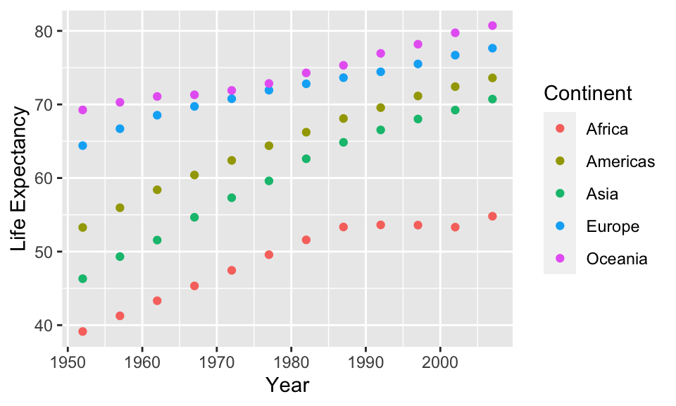
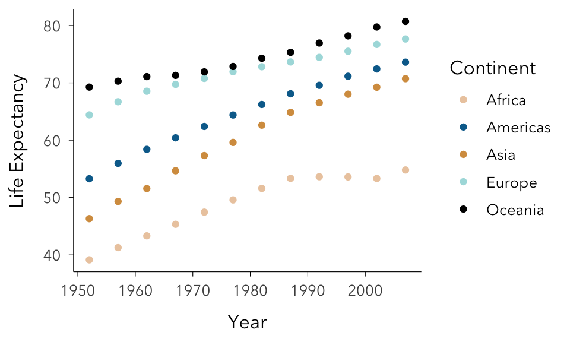
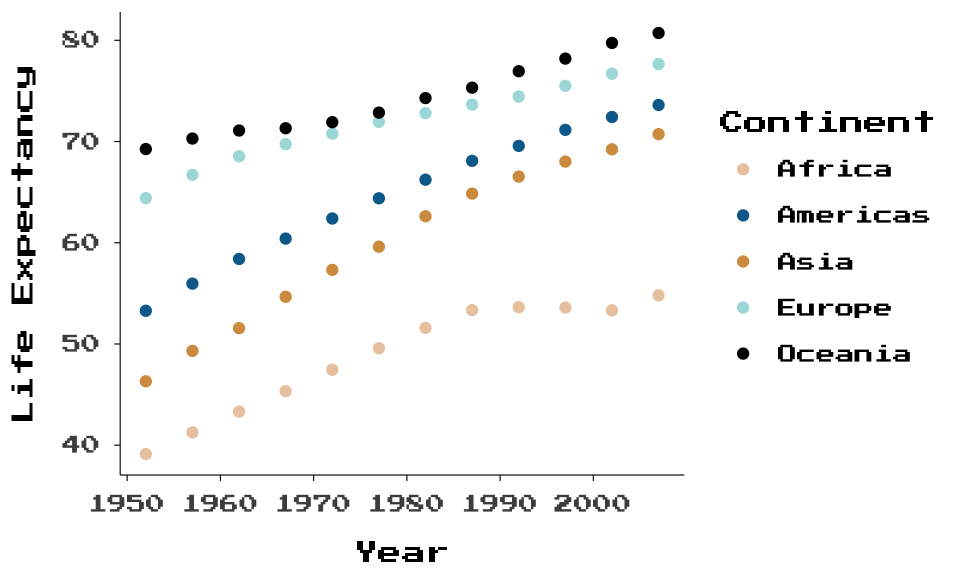

library(ggplot2)
library(gapminder)
library(dplyr)
library(wesanderson)
library(systemfonts)
# a bit of data processing
dat <- gapminder %>%
group_by(year, continent) %>%
summarise(`Life Expectancy` = mean(lifeExp),
Population = sum(as.numeric(pop))) %>%
rename(Year = year, Continent = continent)ggplot2 has become one of the most powerful and flexible visualisation tools, with a large community and lots of people working on new extensions every day. A large number of ways to represent data makes it possible to create nearly anything in ggplot2, from great data journalism to beautiful infographics and generative art. No postprocessing required anymore.
The general look of a ggplot is controlled by a theme. Anyone using ggplot knows that the default grey theme is usually not what you want to show the world. Modifying themes is very flexible, but a little bit complicated. Even after using it for years, I have to google some things every single time. Creating your own theme is a way to give your plots a consistent and personal design, and will save you a lot of time and many lines of code.
The default ggplot
Let’s use the data from gapminder to see how a default plot looks like. We first load a few packages and do some data pre-processing.
Here is a default theme_grey() scatterplot.
ggplot(dat, aes(Year, `Life Expectancy`, color = Continent)) +
geom_point()
There are a few things I change all the time:
The background, which I prefer simple plain, or only with x and y axis lines.
Grid lines: I usually keep only major grid lines (as they are connected to values) or remove them entirely.
The spacing between axis, axis-labels and axis-titles.
The font.
For themes with axis lines, like theme_classic, the line thickness.
Making your own theme
Making a new theme is quite simple. We (1) create a function which starts with a standard theme, such as theme_minimal and (2) add all the theme aspects which we prefer for our plots. Finally (3), we add some arguments to make changing things easy which we need often, such as axis and grid lines and the text size. Below is the theme I am using, but of course you can change every other theme aspect too (see theme documentation). I’m often using the ‘Avenir Next’ font, which might not be installed on your system (at the end of this post is a little guide on how to install fancy fonts). Using ‘sans’ should always work.
theme_simple <- function(axis_lines = TRUE,
grid_lines = FALSE,
text_size = 12,
line_size = 0.2,
# replace with 'sans' if not working
base_family= 'Avenir Next'){
# start with theme_minimal because it is really simple.
th <- ggplot2::theme_minimal(base_family = base_family,
base_size = text_size)
# remove the grid lines
th <- th + theme(panel.grid=element_blank())
# if we want axis lines
if (axis_lines) {
# We add axis lines and give them our preferred thickness
th <- th +
theme(axis.line = element_line(size = line_size),
axis.ticks = element_line(size = line_size))
}
# do we want grid lines?
if (grid_lines) {
th <- th +
theme(panel.grid.major = element_line(size = line_size))
}
# more space for axis text/title and plot title
th <- th + theme(
axis.text.x=element_text(margin=margin(t=5)),
axis.text.y=element_text(margin=margin(r=5)),
axis.title.x=element_text(margin=margin(t=10)),
axis.title.y=element_text(margin=margin(r=10)),
plot.title=element_text(margin=margin(b=10)))
return (th)
}Adding theme_simple to the plot.
Now, we can add theme_simple() to the plot.
ggplot(dat, aes(Year, `Life Expectancy`, color = Continent)) +
geom_point() +
scale_color_manual(values = wes_palette("Darjeeling2")) +
theme_simple()
Small tweaks can sometimes make a big aesthetic difference. ggplot comes with a few themes, like theme_classic(), which are sort of close to what I like my plots to be, but are just not quite there. If you feel the same, it’s time to make your own theme.
Lastly, you can put the code for your theme into an R script and save it, for example as theme_simple.R. The next time you make plots, just source the script to load the theme_simple() function. To use it as the default theme, we can use theme_set like so:
source("theme_simple.R")
# set theme_simple as default theme
ggplot2::theme_set(theme_simple()) That’s it!
If you are plotting in base R, you might say: You need a full blog post just to explain how to make ggplot look like base R with a different font! And I can only say: touché, my friend.
Appendix: Fancy fonts made easy
Fonts can really make a big difference in the visual design of plots. A lot of freely available fonts are on https://fonts.google.com/. On Mac, I just download them, double click and they are installed. Then, we have to make them available in R. The systemfonts package magically finds all installed fonts from different directories.
# install.packages("systemfonts)
library(systemfonts)
# which fonts are installed?
# print only top 5
system_fonts()[1:5, ]#> # A tibble: 5 x 9
#> path index name family style weight width italic monospace
#> <chr> <int> <chr> <chr> <chr> <ord> <ord> <lgl> <lgl>
#> 1 /System/Library… 1 ShreeDev… Shree D… Bold bold normal FALSE FALSE
#> 2 /Users/mstoffel… 0 FiraCode… Fira Co… Medi… medium normal FALSE TRUE
#> 3 /System/Library… 0 AcademyE… Academy… Plain normal normal FALSE FALSE
#> 4 /System/Library… 0 Impact Impact Regu… heavy semic… FALSE FALSE
#> 5 /Users/mstoffel… 0 IBMPlexS… IBM Ple… Thin ultra… normal FALSE FALSEI’ve just downloaded a font which looks like it’s from Pokemon Red and Blue on the old big grey Game boy, called Press Start 2P. We can first check if its there with match_font() and then just use it in the ggplot.
# match_font('Press Start 2P')
ggplot(dat, aes(Year, `Life Expectancy`, color = Continent)) +
geom_point() +
scale_color_manual(values = wes_palette("Darjeeling2")) +
theme_simple(base_family = "Press Start 2P", text_size = 9)
pdf-ing fancy fonts
Sometimes, especially for science publications, plots need to be saved as pdfs. With non-standard fonts, this can be problematic, because they have to be embedded, but a little tweak to ggsave() can help here.
ggsave("plot.pdf", device = cairo_pdf)